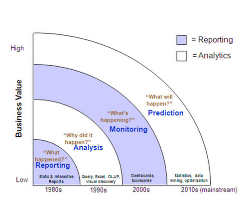

pkb contents
> bi | just under 312 words | updated 10/11/2017
-
Early electronic record-keeping and reporting
-
Executive and management information systems
-
BI dashboards:
data for all

Enterprise data warehouse approaches:
-
Online data store
-
Star schema
-
Data vault